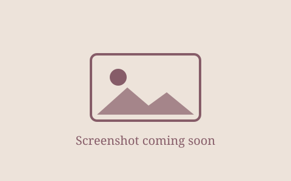

ARTEN
This project is based on NLP for summarization and classification of text from arabic to english. It is made using a transformer based model for summarization and text generation of translated texts!
GitHub Repo
Hello!
Analyst at e& · CVM / SMB & Robotics
I'm a Computer Science graduate from The British University in Dubai with a concentration in Artificial Intelligence (CGPA 3.81, graduated with distinction). At e& I work on automation, LLM-powered tooling and data/BI: building robots, dashboards and reporting tools that save teams time.
Outside of work I'm a published young adult author, a volleyball captain, a runner and an avid reader.
e& (Etisalat) · Dubai
Stealth health analytics startup (prototype stage) · Dubai
Meydan Free Zone · Dubai
Earlier: Legal Intern, General Motors (2022) · Project Manager Intern, SchemaZone (2022), led a team of 3 and pitched to judges in China · Huawei Seeds for the Future (2021), competition runner-up
Languages: English, Urdu, French (basic), German (basic)
This project is based on NLP for summarization and classification of text from arabic to english. It is made using a transformer based model for summarization and text generation of translated texts!
GitHub Repo
This project was my first commercial project I completed in an Internship at Meydan Free Zone. The chatbot is built using Open AI GPT-3.5-turbo model to answer questions customers may have regarding setting up a business in Dubai. It also is connected to the CRM which is being used at MFZ and is capable of collecting leads and optimizing them!

This project uses machine learning algorithms and techniques to accurately classify when a plant is sick. This is based on object detection using Yolo models
GitHub Repo
This project uses machine learning algorithms to recommend you a dish based on items detected using a YOLOv8 model in your pantry! Never again wonder what to eat or make!
Presented at Sandooq Al Watan 2024 and to the UAE Minister of AI.
GitHub Repo
A virtual student assistant I co-developed: an AI assistant that summarises long research papers and answers questions about them.
An e-commerce flower storefront with a bouquet builder, inventory management, and separate admin and customer access.
Traces how the YOLO family of object-detection models has evolved and compares them on pedestrian detection.

Written with a team of co-authors during my degree, this paper designs an IoT-based semi-steering system for better mobility. It uses object detection with YOLO and OpenVINO to spot objects that may pose a threat to drivers.

An article for my university's yearly magazine on how creative outlets become mirrors for self-reflection. It explores how authors, Charles Dickens among them, infuse their work with how they see the world around them.

I started writing it fresh out of high school with a rough storyboard and a dream, then spent about two years writing and planning until Riot and Kinza came to be. Today it is internationally published.